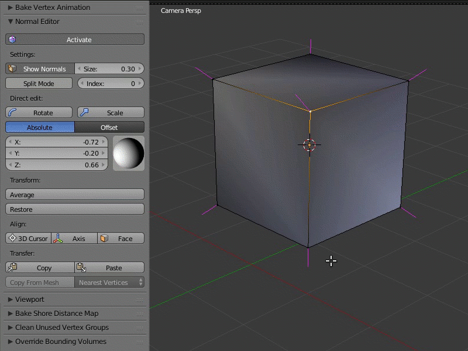

Редактор нормалей¶
Содержание
Редактирование нормалей - достаточно простой и эффективный способ изменить собственное затенение трехмерной модели, не усложняя ее геометрию.
С помощью редактора нормалей, в некоторых случаях, можно достичь результатов, аналогичных применению карт нормалей. При этом метод редактирования нормалей является более предпочтительным с точки зрения потребления вычислительных ресурсов и видео-памяти.
Пример работы редактора нормалей:
{kind=link}
Слева - обычное затенение геометрии, справа - дерево с редактированными нормалями.
{kind=link}
Слева - ворота с обычным затенением, в центре - ворота с редактированными нормалями, справа - геометрия модели ворот с сеткой.
{kind=link}
Слева - обычное затенение геометрии травы, справа - трава с редактированными нормалями.
{kind=link}
Слева - очки с обычным затенением, справа - затенение геометрии с редактированными нормалями.
Основные особенности редактора нормалей:¶
для хранилища массива данных с направлениями вертексных нормалей используется “родной” блок данных Blender (появился в версии 2.74);
редактирование нормалей и отображение затенения теперь происходит в режиме редактирования (
Edit Mode);все изменения записываются сразу же автоматически;
вращение нормали выделенного вертекса можно производить непосредственно в окне Viewport’a по горячим клавишам
Shift+Ctrl+R, подобно остальным операциям вращения в Blender;редактированные нормали экспортируются автоматически.
Интерфейс¶
Интерфейс редактора нормалей располагается на панели инструментов Blend4Web > Normal Editor. Перед началом работы редактора для объекта необходимо включить режим затенения Shading: Smooth и нажать кнопку Activate на панели редактора нормалей или выставить галочку Auto Smooth в настройках меша.

Activate¶
Кнопка Activate включает режим редактирования вертекных нормалей.
Достаточно в режиме Edit Mode нажать кнопу Activate, и можно приступать к редактированию вертексных нормалей. Пока она остаётся в активном режиме, затенение объекта и его экспорт будут осуществляться с учетом редактированных вертексных нормалей. Другими словами, после внесения изменений, для их отображения во Viewport’е Blender и в движке Blend4Web кнопка должна быть оставлена активной.
Show Normals¶
Для удобства в панель продублирована оригинальная кнопка Blender, включающая отображение маркеров вертексных нормалей во Viewport’е, а так же настройка их длины.
Достаточно просто включить кнопку Show Normals прямо на панели редактора вертексных нормалей Blend4Web или в правой панели Blender в разделе Mesh Display и настроить комфортную длину маркера в поле Size.
{kind=link}
Rotate¶
При помощи этого инструментария можно вращать нормаль каждого вертекса индивидуально. Функция Rotate также доступна по горячим клавишам Shift+Ctrl+R и позволяет вращать вертексные нормали в привычном для пользователя Blender режиме.

Выделив один или несколько вертексов, которые хотите изменить, вращайте их, используя визуальную сферу на панели редактора вертексных нормалей Blend4Web, или задайте направление каждой координате в цифровом значении.
Более удобный вариант манипуляции с вертексными нормалями предоставляет кнопка Rotate. Вращение происходит по координатам в пространстве экрана, но, как и при обычном вращении объектов в Blender, можно изолировать нужную ось координат и вращать только по ней (нажав X, Y или Z) и вводить угол поворота при помощи цифровых клавиш.
Scale¶
Эта функция используется для масштабирования нормалей и доступна как из панели Tool, так и при помощи клавиш Shift + Ctrl + S. Масштаб нормали задаётся при помощи цифровых клавиш; клавиши X, Y и Z задают ось координат, вдоль которой осуществляется масштабирование.
Примечание
Обратите внимание, что видимая длинна нормали определяется параметром Size и не меняется при масштабировании.
Режимы Absolute и Offset¶
Редактор нормалей может функционировать в двух режимах: режиме Absolute и режиме Offset. Режим может быть выбран с помощью двух кнопок, расположенных прямо под вышеописанной кнопкой Rotate. По умолчанию используется режим Absolute.
Режим Absolute¶

В этом режиме редактор нормалей работает по умолчанию. В нём координаты нормального вектора абсолютны и могут быть заданы с помощью полей X, Y и Z либо с помощью сферического контроллера, расположенного рядом с ними.
Режим Offset¶
{kind=link}
В этом режиме к нормальному вектору прибавляется вектор, заданный пользователем.
Поля X, Y и Z используются для задания соответствующих компонент вектора, а кнопки Sub и Add определяют, вычитается ли пользовательский вектор из нормального или складывается с ним.
Split Normals¶
Режим Split Normals позволяет редактировать вертексные нормали индивидуально для каждой грани (Face в Blender), образующей редактируемую вершину (Vertex в Blender). Переключатель вертексных индексов позволяет перемещаться между нормалями разделенного вертекса.
{kind=link}
Перейдя в режим Split Normals, выберите нужный вертекc и измените направление его нормали. Прежде всего подвергнется модификации та нормаль, которая имеет наименьший индекс в очереди (то есть 0) редактируемого вертекса. Далее, перемещаясь по индексам, перейдите на следующую нормаль этого вертекса и редактируйте ее.
Average¶
Average усредняет направление вертексной нормали, исходя из направлений нормалей, разделенных функцией Split Normals.
{kind=link}
Для того, чтобы объединить несколько разделенных вертексных нормалей в одну так, чтобы она имела их среднее направление, достаточно выделить нужный вертекс и нажать Average Split.
Restore¶
Кнопка Restore восстанавливает исходное направление нормалей выделенных вертексов.

Для того, чтобы восстановить нормали к исходному направлению (которое раcсчитывается на основе нормалей полигонов), нужно выделить нужные вертексы и нажать кнопку Restore.
3D Cursor, Axis и Face¶
Кнопка 3D Cursor ориентирует нормали выбранных вершин по направлению к 3D-курсору (если активирован параметр Towards на панели Vertex Normal Cursor) или в противоположную сторону. Кнопка Axis направляет нормали вдоль одной из осей координат (ось задаётся на той же панели Vertex Normal Cursor). Кнопка Face ориентирует нормали всех вершин выбранной грани параллельно нормали этой грани.

Чтобы воспользоваться функцией 3D Cursor, выделите нужные вертексы и расположите курсор в нужном вам месте. После нажатия кнопки 3D Cursor все выделенные вертексы будут направлены в сторону от курсора, как будто бы они выстреливают из одной точки. После этого можно также включить опцию Towards на панели Vertex Normal Cursor; эта опция разворачивает нормали по направлению к курсору.
Использовать функцию Axis очень просто: достаточно выбрать вершины и нажать кнопку, после чего функция направит нормали этих вершин вдоль оси координат, выбранной на панели Vertex Normal Cursor (по умолчанию выбрана ось Z) или в противоположном направлении (если отключить опцию Towards на той же панели).
Чтобы направить нормали вертексов параллельно нормали грани, выделите нужную грань (или несколько граней) и нажмите Face. Все нормали вертексов, образующих эту грань, будут направлены параллельно нормали самого полигона.
Функции 3D Cursor, Axis и Face также обладают параметром Factor, который используется для смешивания начальной позиции нормалей с окончательной. По умолчанию значение этого параметра равно 1.0 (используется окончательная позиция).
Copy/Paste¶
Копирует направление нормали с одного вертекса на другой.
{kind=link}
Выделите вертекс для копирования и нажмите Copy. Затем выделите вертекс, на который хотите копировать результат, и нажмите Paste. Вставлять скопированную информацию можно на множество разных вертексов. Кнопки не активны в режиме Split Mode и не переносят данные уже “разделенных” нормалей на другие вертексы.
Copy From Mesh¶
Эта функция позволяет копировать направление вертексных нормалей с одной геометрии на другую. Существует два режима копирования, Matched Vertices и Nearest Vertices.
В режиме Matched Vertices копируются направления нормалей с вертекса одной модели на вертекс другой, если у них одинаковые координаты; прочие вертексы игнорируются. В режиме Nearest Vertices копируются нормали с ближайших вертексов другой модели.

Работа с этой функцией производится в объектном режиме. Первым нужно выделить объект, с которого будет происходить копирование, далее объект, на который будет происходить копирование. Необходимо также выделить вертексы целевого объекта, на которые необходимо произвести перенос направления нормалей.